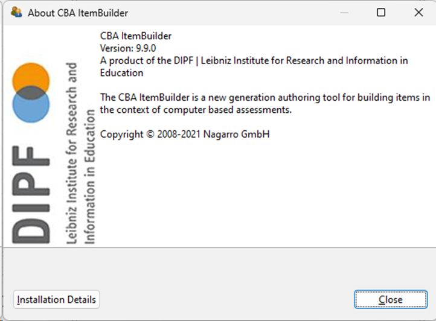
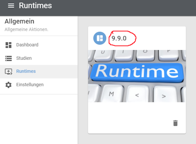
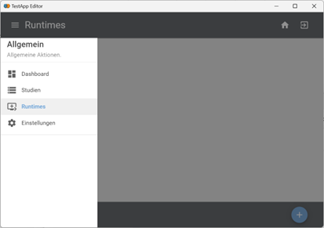
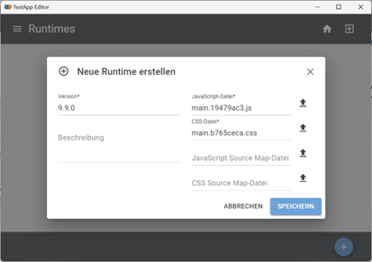

10 Einstellungen / Settings
The IRTlib Editor has a small number of settings.The language can be set to German or English.
10.1 Overview
The IRTlib software is currently still under development. Information about the current version (and for Preview versions about the build hash) can be found in the section About the Program.
10.1.1 Settings
In this area, settings can be made that affect work with the Editor and all studies.
10.1.1.1 Runtime management
To configure studies that use CBA ItemBuilder content with the IRTLib Editor, the appropriate runtime environment (Runtime) is required for each version. Current tested versions of the CBA ItemBuilder runtime are already stored in the Editor, but runtimes for other versions of the CBA ItemBuilder or updated or corrected runtimes can also be imported into the Editor in this area.
Runtimes that are available in the Editor are automatically integrated as part of the study configuration when studies are published and are thus available to the IRTLib Player.
10.1.1.2 General settings
Change the language for the editor in this section. The setting selected here has no influence on the language of the assessment content in the configured studies.
10.1.2 About the program
Under the Version info button, you will find a summary of the latest changes and information on the current program version.
10.2 Runtimes
The IRTlib Software can be used with CBA ItemBuilder tasks of different CBA ItemBuilder versions. The required Runtime (i.e., the connection between the CBA ItemBuilder tasks and the IRTlib Software) is part of the study configuration so that the IRTlib Player knows for sure how to use CBA ItemBuilder tasks of a particular version.
10.2.1 Runtimes
To use the IRTLib Editor for configuring studies that use CBA ItemBuilder content, the appropriate runtime environment (Runtime) is required for that version. Current tested versions of the CBA ItemBuilder runtime are already stored in the Editor, but runtimes for other versions of the CBA ItemBuilder or updated or corrected runtimes can also be imported into the Editor in this section.
10.2.1.1 Check CBA ItemBuilder Version
You need to know which version of the CBA ItemBuilder was used to prepare the items (i.e., the CBA ItemBuilder project files). If you are in doubt, this information can be found, for instance, in the About Dialog of the CBA ItemBuilder:
- Step 1: Open the “About”-dialog using the “Help”-menu

- Step 2: Find the version number in the dialog (here
9.9.0)

The version number must be listed as one of the cards shown in the section Runtimes of the IRTlib Editor’s Settings:

10.2.1.2 Import Runtime Files
If the appropriate runtime is not already included in the editor, a new/additional Runtime can be imported. Study configurations created/edited with the IRTlib Editor can contain multiple Runtimes for different versions.
- Step 1: To integrate a runtime, a JavaScript and a CSS file are required. These files can be downloaded here:
https://cba.itembuilder.de/appendix-tables.html#previous-versions
Step 2: Unzip the downloaded Runtime that should be used.
Step 3: Navigate to the section Runtimes:

Step 4: Push the button “+” (bottom right)
Step 5: Enter the version number with three places (e.g., 9.9.0):

Step 6: Select the file
main.*.jsfrom the ZIP archive that contains the runtime. Note that the * equals the hash of the file (i.e., the complete file name looks likemain.19479ac3.js)Step 7: Select the file
main.*.cssfrom the ZIP archive that contains the runtime. Note that the * equals the hash of the file (i.e., the complete file name looks likemain.b765ceca.css)
Note: The field Description and the additional two Map-Files (for JavaScript Source and for CSS Source) are optional.
- Step 8: Press the button Save to complete the import of the Runtime:

After importing the supported CBA ItemBuilder versions are listed in the section Runtime. To delete a Runtime for a particular version, click the Trash icon on the bottom right of the “card” and confirm with Delete.